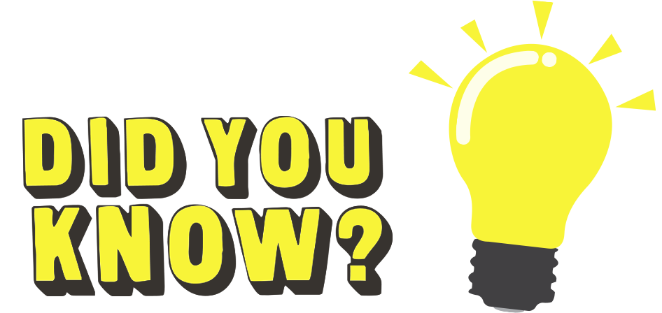

Fun facts about the businessmen
Bill Gates
- He dropped out of college
- In 1977, he was jailed in Albuquerque, New Mexico.
- He has a fantastic SAT score (1590 out of 1600)
- His children will only inherit a little portion of his fortune
- He does not speak any languages other than English
- He would have been an AI researcher if Microsoft had failed
- A Netflix documentary has been created on him

Elon Musk
- Musk was on the verge of selling Tesla to Google in 2011
- He only lasted two days at Stanford before dropping out
- He paid about $1 million for James Bond’s underwater car
- To pay his rent, Musk ran a nightclub
- Robert Downey Jr. drew inspiration for Tony Stark from Musk
- Musk established a school to educate his children
- He is a big fan of Kanye West
Jeff Bezos
- Bezos’s biological father was a circus performer at one point in his life
- When he was in high school, he started his first business
- In the early 1990’s, he worked on Wall Street
- Amazon was founded by Bezos when he was in his garage
- Instead of Amazon, Bezos almost named his company ‘Cadabra’
- In 2003, he was a passenger in a helicopter crash
- The Washington Post is owned by Bezos
- In August 2020, Bezos became the first individual to surpass the $200 billion mark
Steve Jobs
- He was adopted
- He was a collage dropout
- He always wore his signature black turtleneck, because his employees didn’t want to wear uniforms
- The earliest computer of Jobs was recently auctioned for nearly $500,000
- His final words were “Oh wow, Oh wow, Oh wow”
Mark Zuckerberg
- He invented an instant messaging program called ZuckNet in middle school
- He can speak Mandarin
- He values fitness and staying healthy
- He greatly admires Steve Jobs
- Facebook’s logo is blue because Zuckererg has red-green colour blindness
- He almost worked for Microsoft
- He turned down many proposals to sell Facebook
Return to the top of the page
Return to home
Visit the businessmen page
View the sources